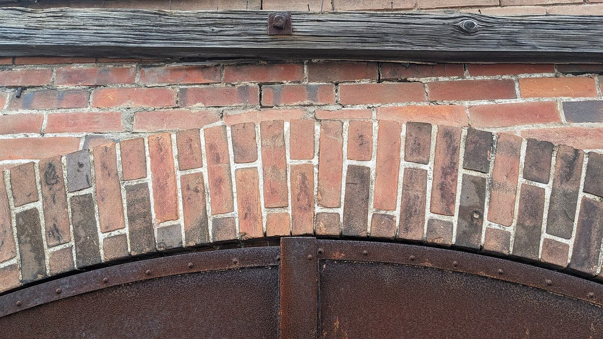
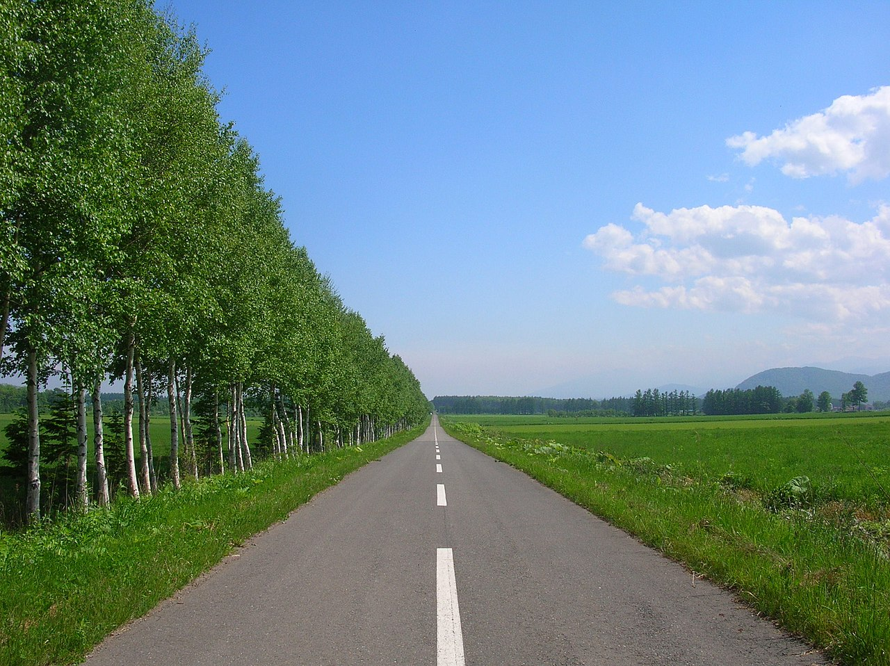
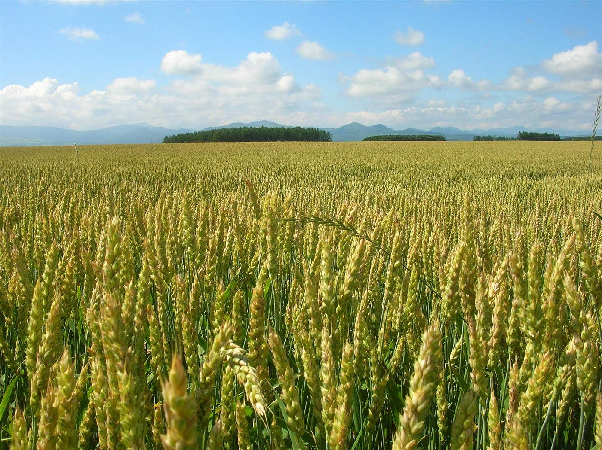
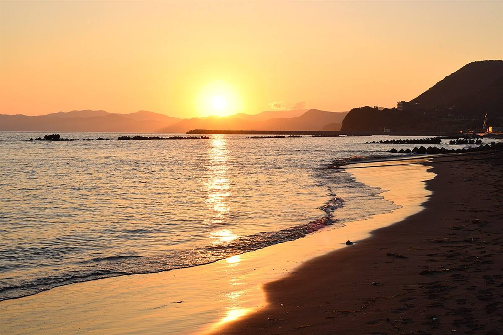
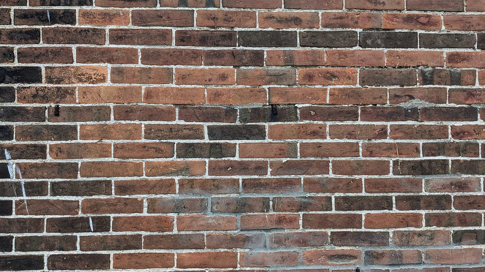
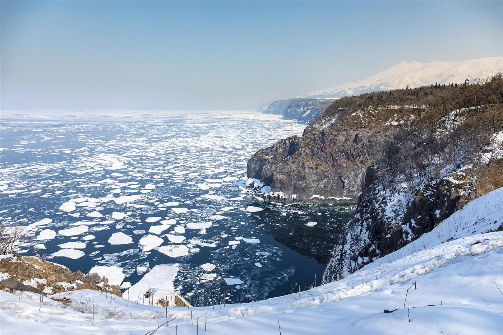

てら整体院
れんがの街、江別で。
ひとつずつ、積むように、
からだをゆるめる時間を。
北海道江別市錦町の小さな整体院です。リラクゼーションを大切にした、おだやかなひとときをご案内します。


写真は北海道内他地域のイメージです(れんがは函館市)。
About
てらの、三つの積み木
江別は、れんがの街として知られています。ひとつずつ丁寧に積み重ねるように、お一人おひとりとの時間を大切にしたい。そんな思いを、ページの構成にも重ねました。
01
おだやかな時間
慌ただしい毎日から少し離れて、ほっとひと息つける場所を目指しています。リラクゼーションを大切にした整体院です。
02
江別・錦町
北海道江別市錦町48-1。まちの中の、小さな一室です。
03
まずはご連絡を
メニュー・料金・営業時間は準備中です。お電話かInstagramからどうぞ。
お電話・Instagram
Hokkaido Scenes
北海道の風景(イメージ)
雪、麦畑、海。北海道の空気を感じていただくためのイメージ写真です。撮影地はいずれも江別市ではありません。



